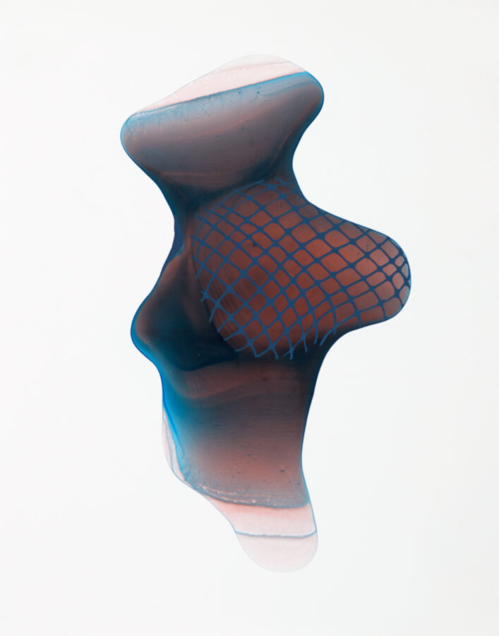

Vesna Jovanovic: Bawdy
Bawdy explores the tension between seeing and feeling, between the body as subject and as experience. Vesna Jovanovic’s artwork is driven by one central question: How do I depict a lived body instead of an observed one? Through a process that begins with spontaneous ink pours and evolves into deliberate mark-making, her work blurs the boundary between control and surrender. Drawing on the carnivalesque—its humor, exuberance, and celebration of the flesh—Jovanovic’s figures hover between abstraction and anatomy, comedy and vulnerability. In these paintings, the accidental becomes intimate, reminding us that embodiment is never still, always shifting between the observed and the lived.
Wednesday, March 4, 2026
Campus Art Walk with Artists’ Talks: 3 – 4:30 p.m. • Meet at the Visual Arts Gallery for Gwen Yen Chiu’s exhibit “Northerly Winds” • Proceed to the Big Walls Gallery (E/F Corridor) for Vesna Jovanovic’s exhibit “Bawdy” • Continue to the Skylight Gallery (GovState Library) for Nickki Renee Anderson’s “Blossoms Becoming” • Return to the Visual Arts Gallery for a reception, conviviality, and refreshments.
Reception: 5 – 7:30 p.m.